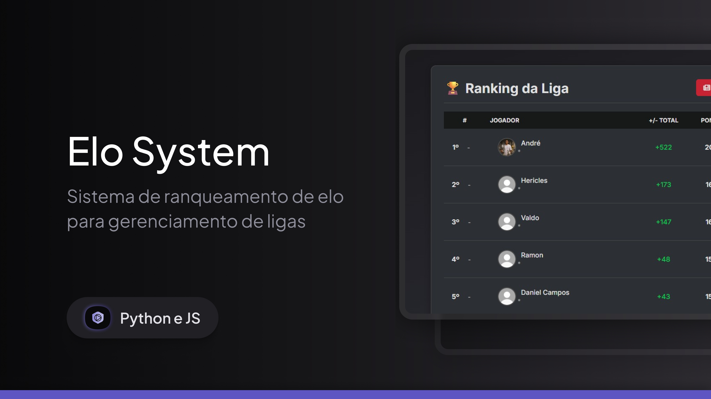

Bot no Telegram para Servidores
Projeto em Python que utiliza WinRM para executar comandos em VMs Windows remotamente via Telegram.
guest@juanverdan:~$ whoami
> Juan Verdan — DevOps Engineer
guest@juanverdan:~$ cat skills.txt
Sou um profissional DevOps com uma jornada que começou no desenvolvimento Frontend e evoluiu para uma paixão por automação e infraestrutura.
Atualmente, como Analista DevOps Jr., sou responsável por garantir a eficiência e a alta disponibilidade de ambientes críticos. Utilizo Python e PowerShell para criar automações que otimizam desde backups e deploys até a renovação de certificados HTTPS. Tenho experiência sólida na gestão de ambientes virtualizados com Hyper-V e na implementação de políticas de segurança em firewalls Fortinet.
Meu objetivo é continuar a desenvolver soluções robustas e seguras, explorando tecnologias de Cloud (possuo certificações OCI e Google Cloud) e aprimorando minhas habilidades em Docker e esteiras de CI/CD.
fluxo de trabalho
Do diagnóstico ao deploy — como eu estruturo automação e infraestrutura do início ao fim.
Mapeio o ambiente, os gaps e os requisitos antes de escrever a primeira linha de automação.
Escrevo scripts e esteiras (Python, PowerShell, CI/CD) que eliminam trabalho manual repetitivo.
Testo, monitoro e coloco em produção com rollback e segurança garantidos.
guest@juanverdan:~$ ls ./projetos
Projeto em Python que utiliza WinRM para executar comandos em VMs Windows remotamente via Telegram.

Uma plataforma avançada de gerenciamento de ligas construída com Python/Flask. Apresenta um sistema Elo híbrido, perfis de jogador com gráficos de desempenho, uma loteria de draft no estilo NBA e geração automatizada de jornais em PDF.